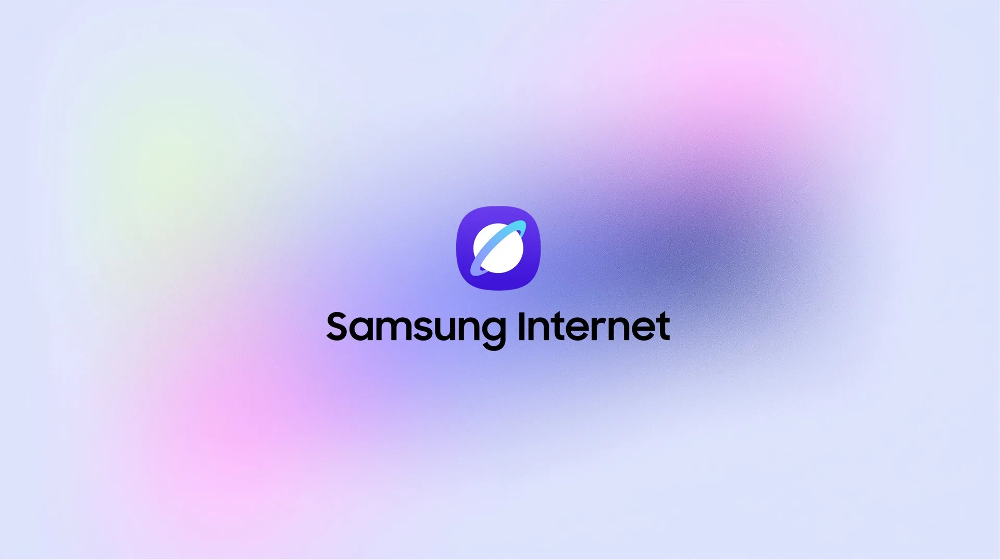
Samsung Internet
Website Renewal
Designed for Better Experience
Samsung Internet의 기능을
더 쉽게 이해할 수 있도록
서비스 소개 페이지를 리뉴얼했습니다.
콘텐츠의 흐름과 정보의 위계를
다시 정리하여, 모바일과 데스크톱
어디서든
원하는 기능을 바로 찾고
막힘없이 둘러볼 수 있도록 설계했습니다.We redesigned Samsung Internet’s
service page to make its features
easy to grasp.
By reorganizing
the content flow and information
hierarchy,
we made it simple
to find any feature and browse
smoothly on mobile or desktop.
기기가 바뀌어도,
인터넷은 그대로.Switch devices,
not your browser.
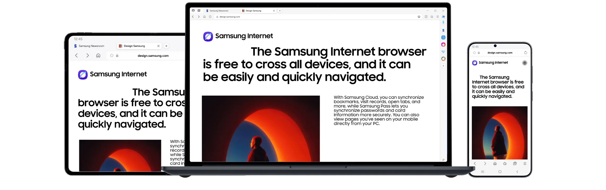
Introducing Samsung Internet
핵심 기능을 하나씩 소개하는 흐름으로 페이지를 구성했습니다.
기능마다 제목과 설명, 이미지의 위계를 분명히 나눠,
스크롤을 내리기만 해도
Samsung Internet의 쓰임이
차례로 읽히도록 했습니다We structured the page to introduce each key feature
in turn.
With a clear hierarchy of headline, description,
and image for every feature,
simply scrolling down reveals how Samsung Internet works, step by step.
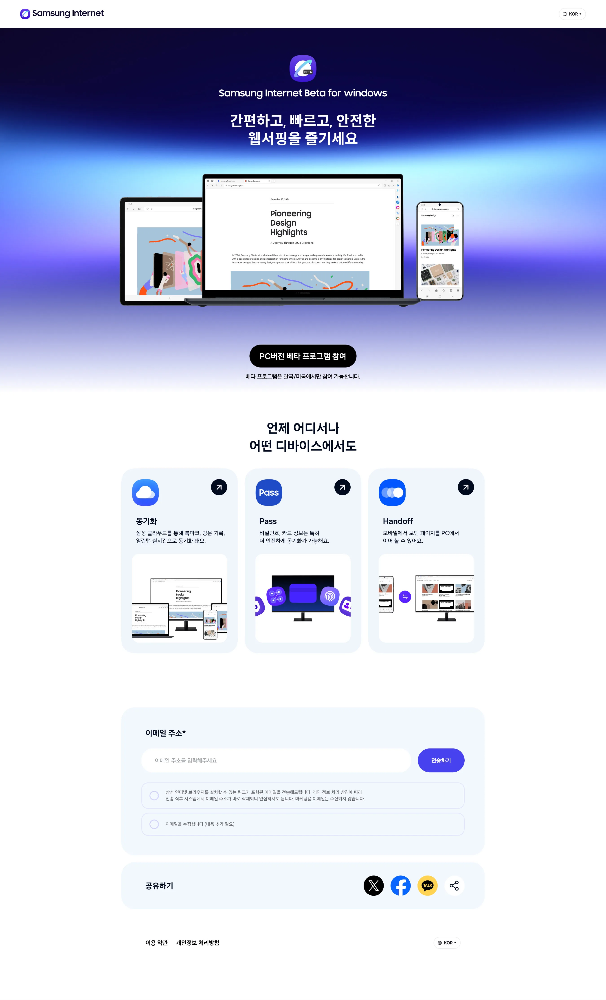
Detailed on Mobile
모바일에서는 기능별 콘텐츠를 더 작은 단위로 나눠,
작은 화면에서도
한 번에 하나씩 가볍게 읽히도록 구성했습니다.
화면 크기에 맞춘 레이아웃으로
한 손으로도 서비스 전반을 끊김 없이 둘러볼 수 있게 했습니다.On mobile, we broke each feature’s content into smaller pieces
so it reads lightly, one step at a time, even on
a small screen.
A layout fitted to the screen lets users explore it all with one hand.
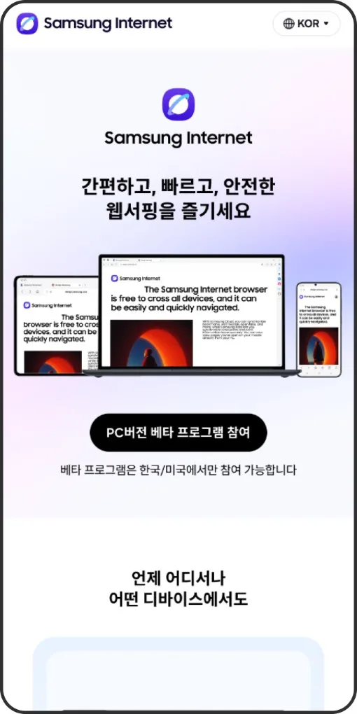
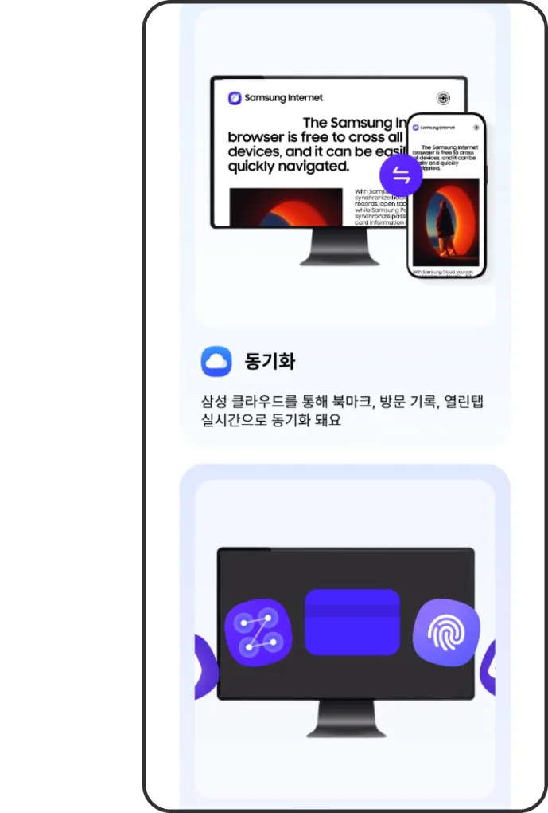
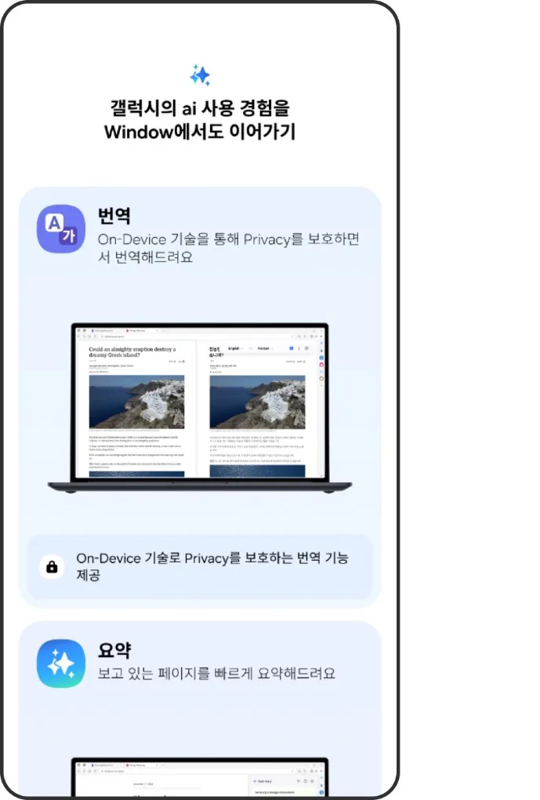
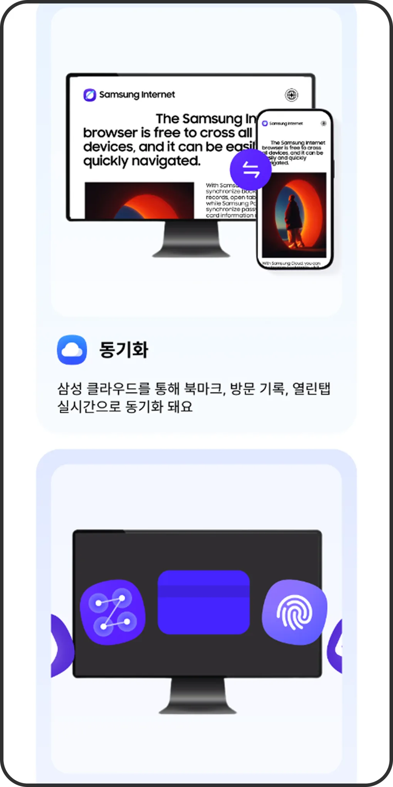
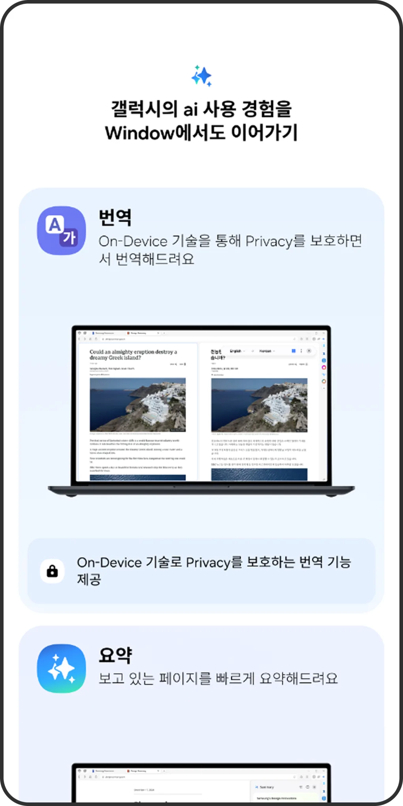
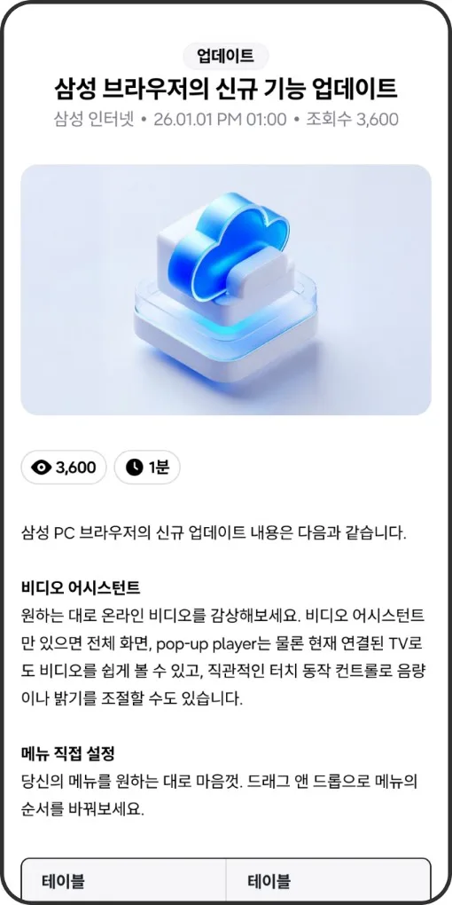
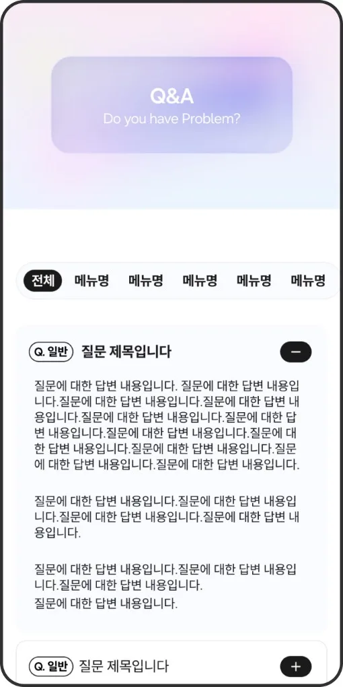
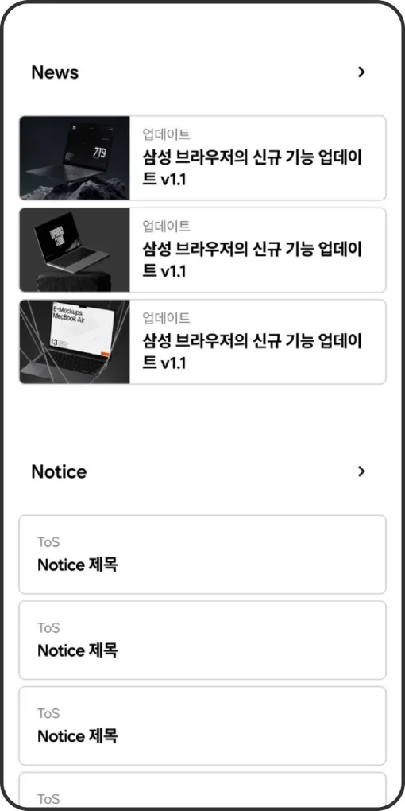
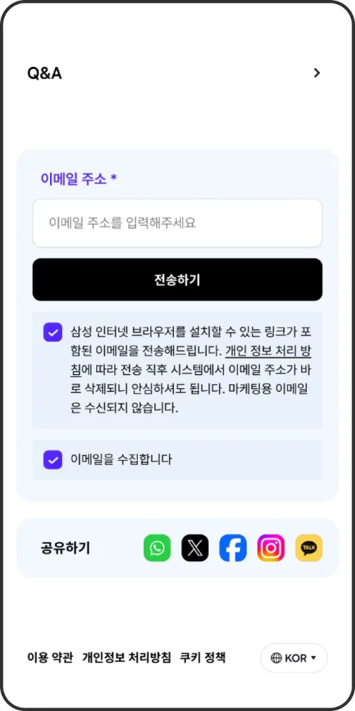